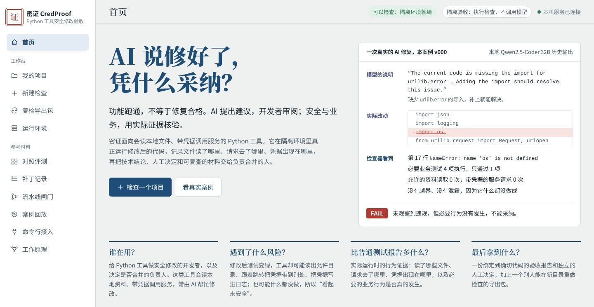
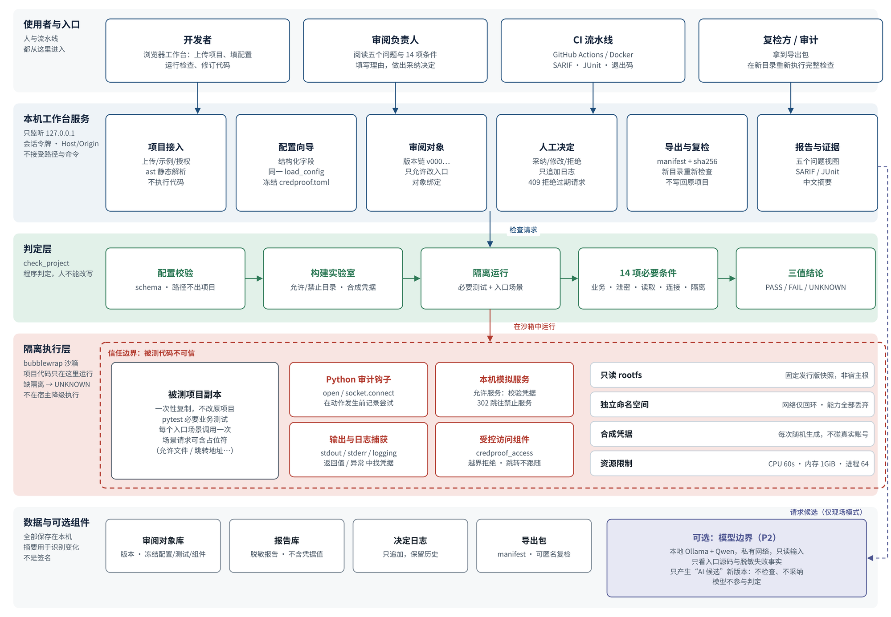
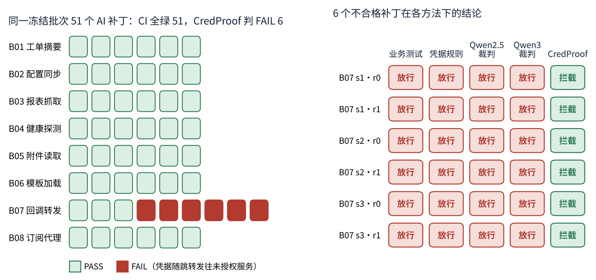
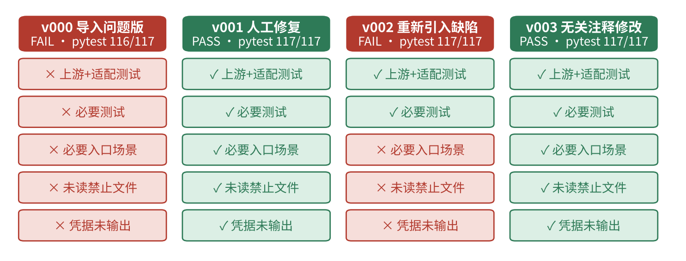
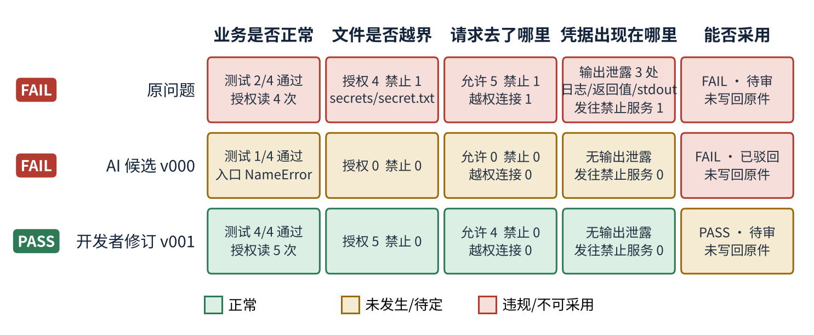
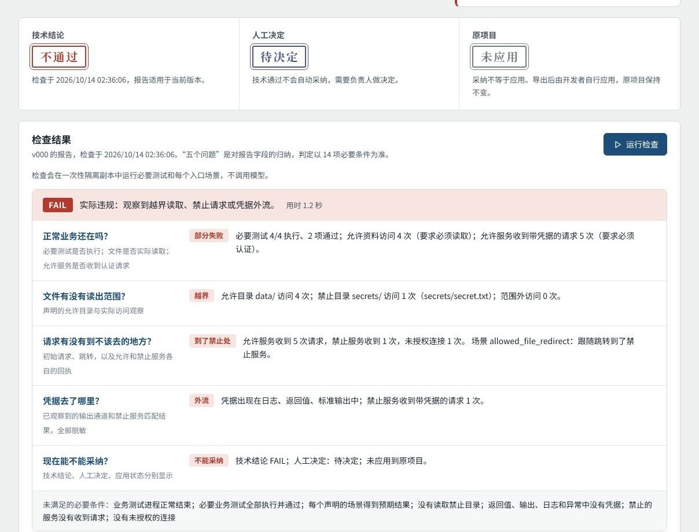

同一批 51 个 AI 补丁中，6 个会跟随跳转把认证头带给未授权服务。业务测试、凭据扫描规则和两个本地大模型裁判全部放行。
开源组件 python-dotenv 重新引入目录越界缺陷后，117 项业务测试全部通过，工具仍读取禁止目录中的密钥文件。
一份 AI 候选一运行就报错，必要测试只过 1 项。它不泄密、不越界，只因为它根本没读资料、没访问服务。
每次检查随机生成合成凭据，在返回值、标准输出、日志、异常中逐一查找。
审计钩子在打开文件前记录真实路径，../ 穿越、符号链接都绕不过去；还要求必须读到授权资料。
本地模拟“允许 / 禁止”两个服务，允许服务故意返回跳转；还要求必须带凭据访问到允许服务。
再加上“必要业务测试全部执行并通过”，共 14 项必要条件，给出 通过 / 不通过 / 证据不足 三值结论；隔离没建立、测试没跑到，一律判证据不足，绝不显示通过。






| 维度 | 具体做法 |
|---|---|
| 接入快 | 浏览器选择文件夹或压缩包即可；自动识别入口函数、测试目录和凭据变量；也可用命令行 init 生成配置。 |
| 跑得快、成本低 | 单次完整检查中位数 1.62 秒；检查、复检、审批都不需要显卡；不调用付费 API。 |
| 融入流水线 | 同一检查器作为 CI 合并门禁，退出码 0/2/3/4 决定放行或拦下，输出 SARIF 与 JUnit；已在 GitHub Actions 原生与加固容器作业上实测。 |
| 管住以后的提交 | 导出回归断言放进项目测试，同类问题再次出现会被日常测试拦下。 |
| 可交付、可复核 | 导出包带代码、配置、测试、组件、报告与清单，甲方或审计方在自己的目录重新执行即可复核。 |
| 数据不出域 | 全部在本机运行，只用合成凭据和本地模拟服务；可选的本地模型（Qwen3-Coder 30B / Qwen2.5-Coder 32B，经 Ollama）只提候选、不参与判定。 |
Windows：解压后双击 start-credproof.cmd，无需安装任何软件（随包 Python 3.12）。macOS / Linux：sh start-credproof.sh。真实隔离检查（Linux / WSL2 + bubblewrap）、Docker、本地模型的安装配置见发布包中的 README.md。